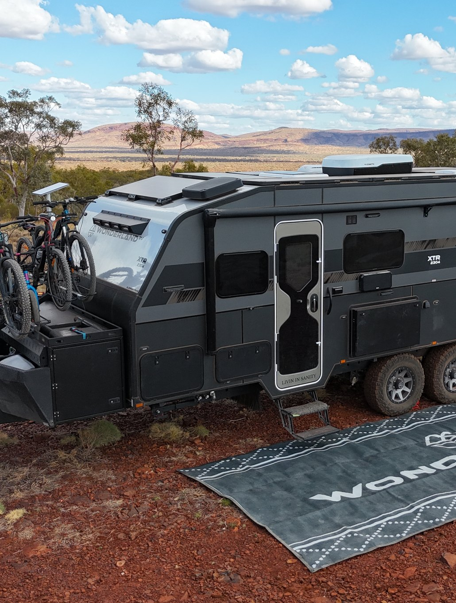
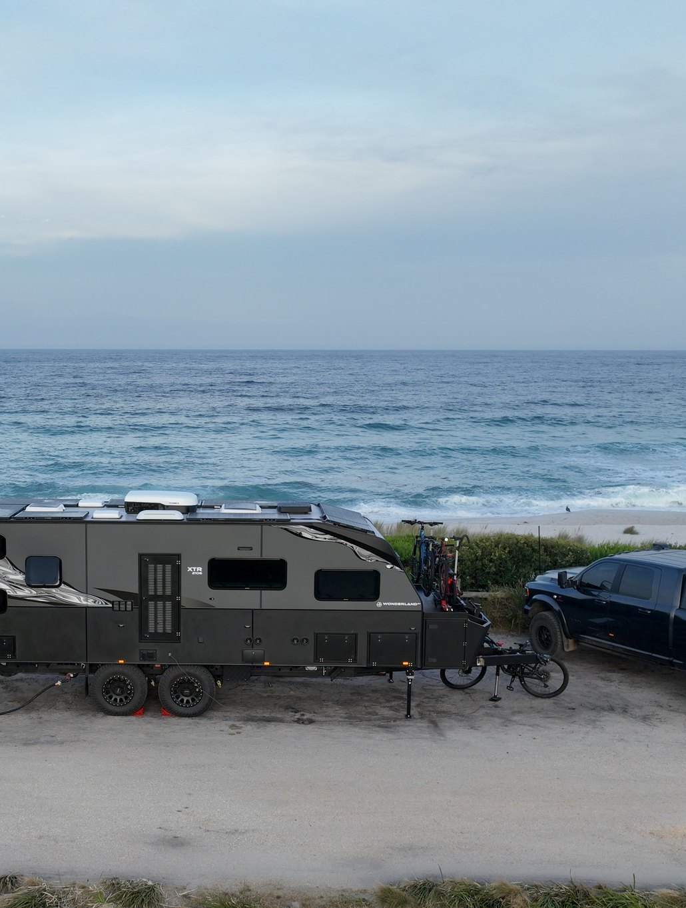
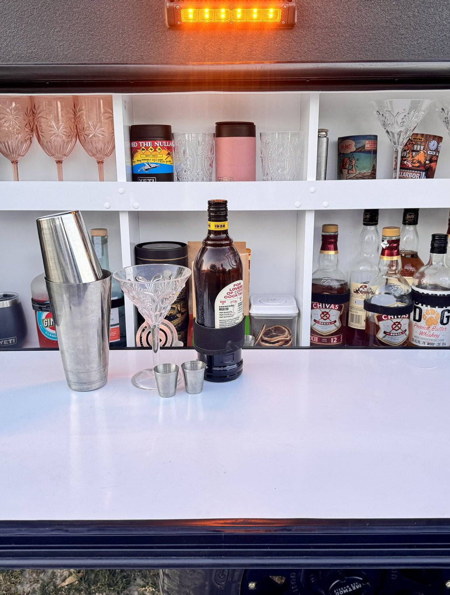
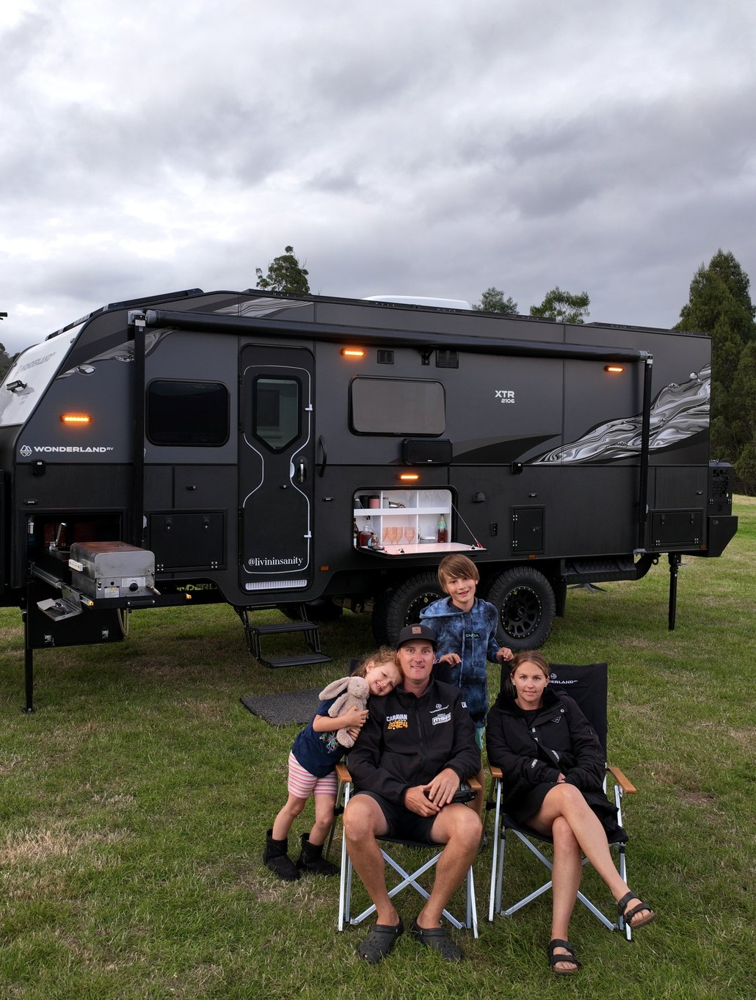
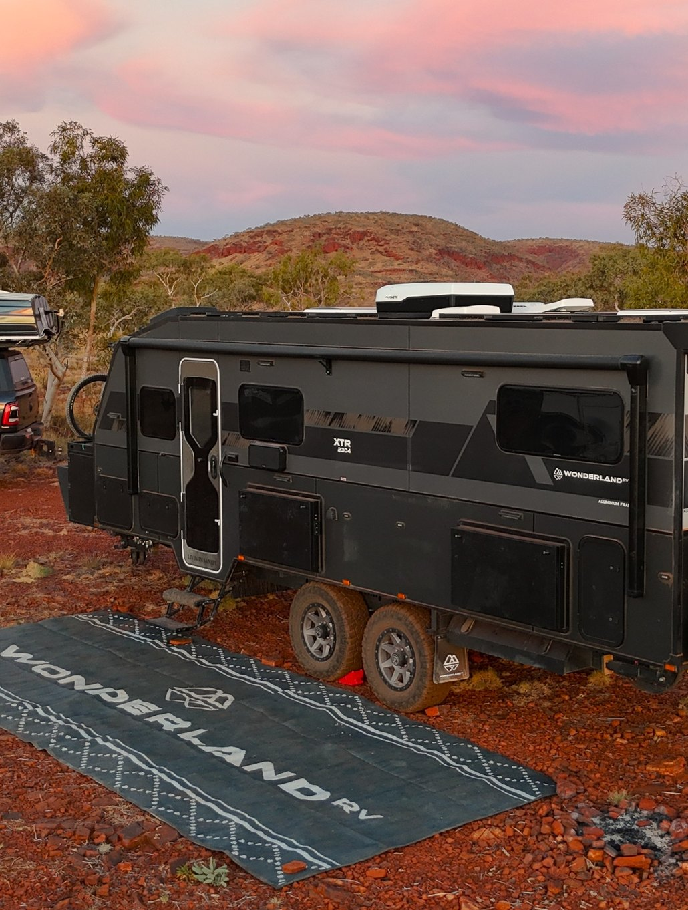
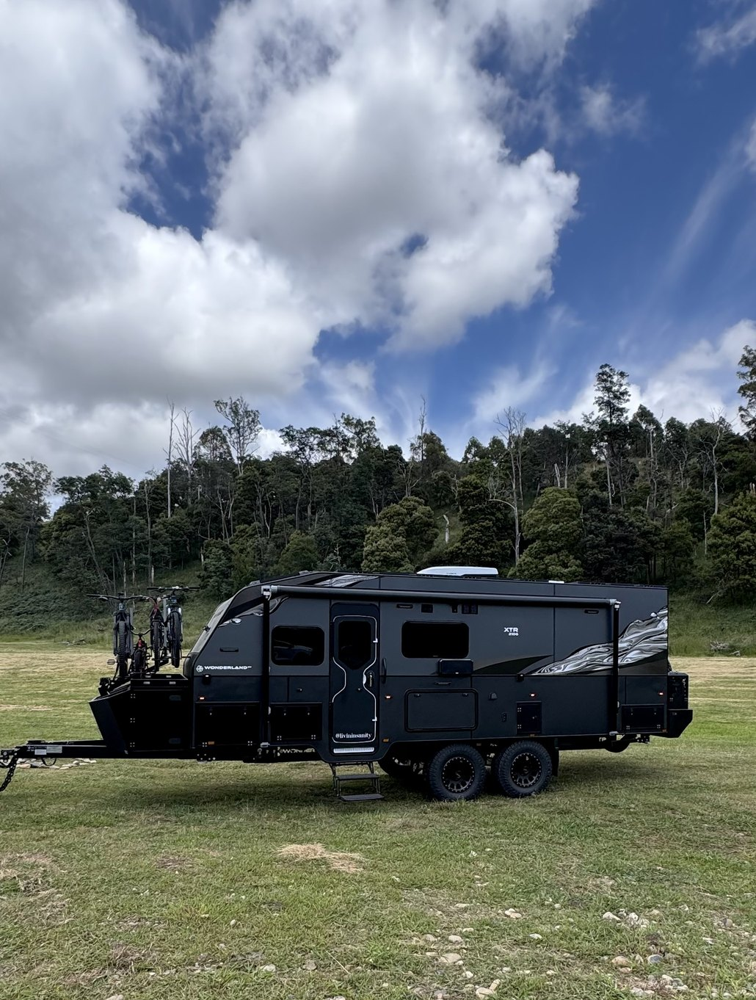

Travelling Australia with kids in a Wonderland RV XTR
Since February 2023, this beautiful family has been full-time travelling, capturing awesome moments and sharing epic memories. If you’re looking for tips on travelling with kids and living the true Aussie lifestyle, be sure to follow their journey.
RICK & KERSTINLIVIN IN SANITY






How do you fit everything in your caravan? Any clever storage ideas?
After 2 years on the road you get very good at storage. The key is to have enough of what you need and nothing extra. Everything in our van has a use and a home. Our clothes are stored in baskets in the cupboard with jumpers and selective seasonal items stored in the tunnel boot. Everything having its own place in the van ensures our tiny space remains neat and clutter free.
What are your go-to meals when caravanning? Do you have any favourite camping recipes that you’d like to share?
It depends on where we are and what we have access to. We do the majority of our cooking outside on the BBQ. Our absolute go-to meal is burrito bowls. We use either mince or chicken and sneak in plenty of extra veg and salad that the kids don’t know about. It is quick, easy and delicious.
What are your must-have caravanning essentials? Any unexpected items that have become indispensable on your travels?
For us, a must is good quality van with brilliant suspension – we are spoilt in our Wonderland RV XTR with the latest technology from Cruisemaster. We spend most of our time remote and off grid, so we ensure we have lots of solar and batteries. Starlink is a must for us – we work and educate our children on the road.
What’s the coolest thing you’ve found on your travels? Any hidden gems or off-the-beaten-path places?
The best thing we have found is ourselves. Our highlight moment of the trip was taking a helicopter ride to the top of Mitchell Falls and hiking out. It was a pivotal moment of our family overcoming fears and seeing mother nature in all her glory from the sky.

Placeholder — one of the three things worth pointing out about this van, once the layout is confirmed.
Placeholder — one of the three things worth pointing out about this van, once the layout is confirmed.
Placeholder — one of the three things worth pointing out about this van, once the layout is confirmed.
We were both working hard in our businesses but were missing the little moments
in our children’s day to day lives. A crazy idea turned into reality, and we have never looked back.

What began as a two-year lap of Australia has somehow turned into seven years of full-time travel. We’ve explored some incredible places, met amazing people and shared plenty of stories along the way.

The Wheatland Wanderers are Cam, Sharyn, and their sons Jye and Cruz. They started out their journey inside of tents, pop-up caravans, and expanders.

Jess, Doug and their three children have travelled Australia full-time since 2024, documenting the road through photography, video and honest storytelling.

Rorden, Cass, Jed and Lexi sold their house in seven days and hit the road in their Hornet. A year was never going to be enough, so van life became the long-term plan.

Placeholder: bio and photo still to come from Adam and Jessy.

Because no two travellers are the same, we believe
no two caravans should be either.
YOUR TRAVELS, YOUR VISION,
YOUR CARAVAN JOURNEY, YOUR RULES.
Livin In Sanity are Rick, Kerstin and their family, who have been travelling Australia full time since February 2023. They share the moments and memories from the road, along with tips for travelling with kids and living the Aussie lifestyle. They travel in a Wonderland RV XTR.
Yes, and Livin In Sanity have been travelling Australia full time with their kids since February 2023. A van set up for the whole family helps, and Wonderland RV builds family layouts with up to six bunk beds. Family off-road caravans show what’s possible.
Livin In Sanity travel in a Wonderland RV XTR, one of the four off-road caravan models Wonderland RV builds to order. It’s the van that carries Rick, Kerstin and the kids around Australia full time. The current XTR specs, from the power system to the chassis, are on the XTR range page.
Wonderland RV builds caravans in custom lengths from 17’05" to 24’, on single or tandem axles, so the size can follow the number of beds your family needs. Livin In Sanity travel Australia full time with their kids in a Wonderland RV XTR. Build Your Caravan takes six steps and emails you a quote.
Yes, Livin In Sanity live and travel full time in a Wonderland RV XTR with their kids. The current XTR carries an 11kWh battery and 1000W of solar on a Victron 24V system, so a family can camp away from powered sites for longer.